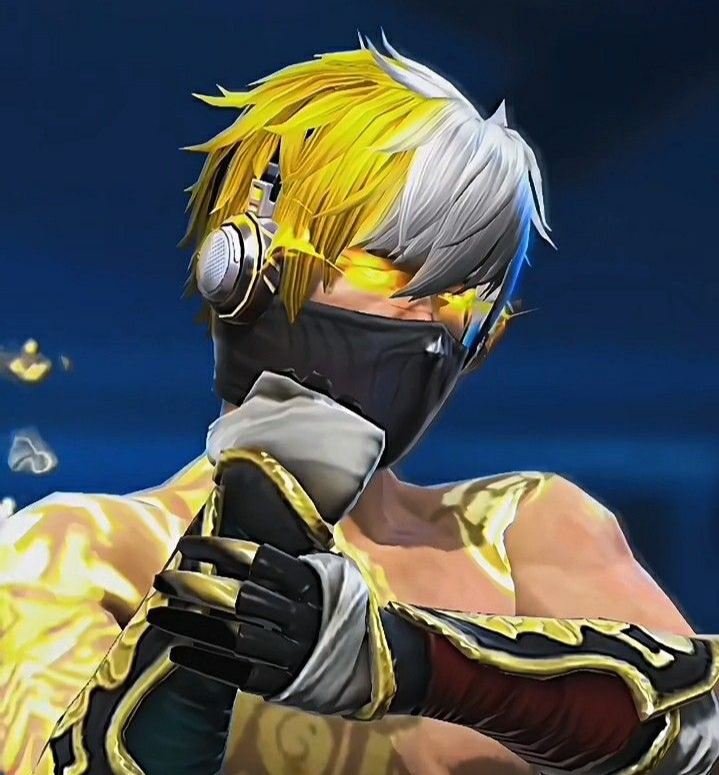

Home
External Eyez eSports is not just a gaming organization—it is a movement, a vision, and a commitment to excellence in competitive esports. Since its inception, External Eyez eSports has strived to redefine the standards of professional gaming, emphasizing discipline, teamwork, and the relentless pursuit of victory. The foundation of our organization was built on the passion of a small group of dedicated gamers who refused to settle for mediocrity. Each member brought unique skills, insights, and creative strategies that, when combined, formed the backbone of an organization that would soon leave a mark in the competitive gaming world. Our organization emphasizes mental resilience, tactical analysis, and adaptability as core principles. These principles are integrated into our daily practices, ensuring that each player is prepared not only for immediate challenges but also for long-term success in the competitive arena. Beyond competitions, our vision encompasses community building and mentorship. External Eyez eSports aims to inspire aspiring gamers by offering guidance, sharing insights from experienced players, and creating an environment where talent can flourish. Through interactive sessions, workshops, and online content, we provide educational resources that help players understand game mechanics, strategy formulation, and effective communication within teams. We emphasize the importance of sportsmanship, ethical gameplay, and respect for opponents, as we believe that professionalism extends beyond victories and defeats. The Home section also highlights our journey, chronicling the milestones that have shaped External Eyez eSports. From local tournaments where we first proved our mettle to regional and national competitions where our reputation grew, each achievement reflects dedication, strategic planning, and teamwork. These stories are not just about trophies—they are about perseverance, learning, and the relentless pursuit of mastery. By navigating this section, gamers, fans, and enthusiasts gain a comprehensive understanding of what sets External Eyez eSports apart. It is a combination of passion, planning, and execution that has made us a formidable name in the esports community. From fostering young talent to setting competitive benchmarks, the Home section encapsulates the ethos, values, and vision that drive our organization forward, making it clear why External Eyez eSports is not just a team but a movement shaping the future of professional gaming.
Team
The Team section is the heartbeat of External Eyez eSports. Every professional esports organization is defined not just by its achievements, but by the players, coaches, strategists, and analysts who make success possible. At External Eyez eSports, assembling the right team is a meticulous process, combining careful selection, rigorous evaluation, and continuous development. Each player is evaluated for technical skill, strategic thinking, communication ability, and adaptability, ensuring they can contribute meaningfully to team dynamics. Our players are more than individuals—they are a cohesive unit where every role is crucial. From strategists who plan our approaches to analysts who break down opponents’ gameplay, each member plays a specialized role while maintaining flexibility to adapt as the game demands. The training regimen is structured to enhance reflexes, decision-making speed, and tactical awareness. Daily practice sessions involve scenario-based exercises, mock competitions, and in-depth analysis of gameplay footage. Coaches monitor performance closely, providing feedback that sharpens both skill and mental resilience. External Eyez eSports also prioritizes personal development. Beyond technical skills, our team members are encouraged to develop leadership qualities, emotional intelligence, and a growth mindset. Workshops on stress management, communication, and strategic thinking complement gaming practice, ensuring players are well-rounded individuals capable of thriving under pressure. This holistic approach ensures that our team does not just perform—they excel in every dimension of competitive gaming. Communication is the lifeblood of any team, and at External Eyez eSports, we cultivate an environment where open, effective communication is prioritized. Players learn to coordinate under pressure, anticipate each other’s moves, and execute strategies flawlessly. This synergy allows us to dominate tournaments, adapt to unexpected scenarios, and consistently outperform competitors. Additionally, mentorship programs connect experienced players with new recruits, creating a culture of learning and shared knowledge. The Team section provides detailed profiles of each member, showcasing not only their accomplishments but also their personality, strengths, and unique contributions to the organization. It illustrates how teamwork, trust, and dedication combine to create an unstoppable force in competitive gaming. By exploring this section, fans and aspiring gamers gain insight into the individuals behind the brand, understanding the human effort, skill, and strategy that make External Eyez eSports a leader in professional esports.
Tournament
Tournaments are central to External Eyez eSports. Each event tests our preparation, strategy, and teamwork. We approach competitions with meticulous planning, including analyzing opponents, refining strategies, and improving coordination. Tournament participation helps our team evolve, develop mental resilience, and demonstrate skill under pressure. Detailed preparation ensures that every player understands their role, anticipates opponent moves, and contributes to the overall strategy effectively. Each tournament experience is a learning opportunity. Post-game analysis is conducted to identify strengths, weaknesses, and opportunities for improvement. By doing so, External Eyez eSports ensures that every competition, whether won or lost, adds value to the team’s growth and expertise. Fans can track our progress, witness our gameplay evolution, and learn from our strategic insights. The Tournament section provides information about upcoming events, registration links, and how players can participate. Our approach is structured, professional, and highly competitive, emphasizing excellence in execution, innovation in tactics, and teamwork as the cornerstone of success.
Recruitment
Recruitment at External Eyez eSports identifies players with skill, strategy, and potential. Candidates are evaluated through gameplay, teamwork exercises, and strategic challenges. We provide mentorship, training, and guidance to nurture talent into professional players. Each recruit is assessed for adaptability, communication, and strategic thinking, ensuring they integrate seamlessly into the team. Recruitment also includes workshops, coaching, and practical gameplay experience. Players are taught to maintain professionalism, discipline, and a growth mindset. The Recruitment section informs aspiring gamers about the application process, requirements, and expectations to join External Eyez eSports. Our aim is to discover, nurture, and develop the next generation of esports champions.
About Us
At External Eyez eSports, we are driven by passion, precision, and the pursuit of excellence in gaming. We operate with a structured approach, ensuring that every player, team, and tournament receives professional attention and seamless coordination. From organizing Clash Squad, Battle Royale, and custom event tournaments to managing online and offline competitions, we cater to all skill levels, providing fair play, real-time updates, and exciting prize pools. Beyond tournaments, we focus on team recruitment, player growth, and community engagement, helping gamers showcase their talent and connect with like-minded players. Our operations blend strategic planning, technology, and creative execution, making every event memorable and every participant part of the External Eyez legacy.


SCOUT
SNIPER
RUSHER

IGL